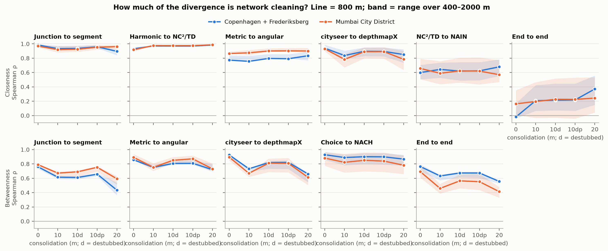
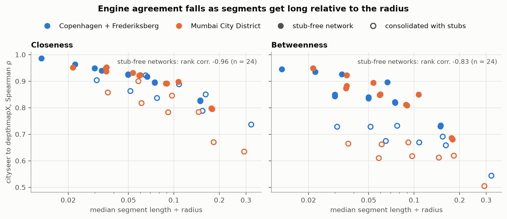

Space Syntax, decomposed
Report, Phases 0–1
The route from metric centrality to Space Syntax (SS) measures is split into single design changes, each measured by rank agreement over interior streets, in Copenhagen + Frederiksberg and the Mumbai island city (OSM walk networks). SS measures were reimplemented and matched to depthmapX first.
- Metric closeness and NAIN are nearly unrelated at walking radii (ρ ≈ 0 at 400 m). Normalisation is the largest single step.
- Choice/betweenness is robust across representations; closeness/integration is not.
- Junction consolidation matters as much as angular cost.
- Global measures depend on map extent; position matters more than size.
- Axial maps generated from OSM do not reproduce hand-drawn ones (ρ ≤ 0.28).
- Neighbourhoods differ an order of magnitude more than the two cities.
1 Question
SS (Hillier & Hanson 1984; Hillier 1996) and street-network analysis (Porta, Crucitti & Latora 2006; Boeing 2017; Simons 2023) both rank streets by centrality but differ in many choices at once: node definition, cost, normalisation, cleaning, extent. Whole-workflow comparisons cannot attribute differences to any one of them.
Which choices separate the two, by how much, and where? Not which is better; that needs movement data (§ Limits).
Test beds: Copenhagen + Frederiksberg (formal, 23–26 km of walk network per km²) and the Mumbai island city (formal and informal, 14–16 km/km²; OSM omits most informal lanes, so Mumbai results describe the formal skeleton only).
2 Definitions
Notation: nodes (i, j); (d_{ij}) shortest-path distance under the chosen cost; radius (r) limits each node’s catchment (N_i(r)) to (d_{ij} r) (metres for metric and angular, steps for axial); Rn = no limit.
2.1 Representations
| Term | Definition |
|---|---|
| Junction (primal) graph | nodes = junctions; edges = streets weighted by length |
| Segment (dual) graph | nodes = streets; linked if they share a junction |
| Straight pieces | curved streets split into straight lines (depthmapX segment map; Turner 2007) |
| Axial map | fewest, longest lines covering open space; nodes = lines, links = intersections (Hillier & Hanson 1984) |
| Generated axial map (S4) | natural streets straightened (Douglas–Peucker, 8 m), ends extended 9 m to cross (Liu & Jiang 2012); a line map rather than a fewest-line map |
| Natural street | chain of streets continuing through junctions with deflection ≤ 30°, straightest pairs first |
| Interior / buffer | reported streets (midpoint inside boundary) / 2 km surround for full catchments |
2.2 Cost
| Cost | Definition |
|---|---|
| Metric | network length (m) |
| Angular | sum of turns, 90° = 1; depthmapX bins turns (tulip, 1024 bins) |
| Topological | line changes (axial) |
| Metric radius on angular routes | depthmapX measures R along the least-angle route, midpoint to midpoint; not the metric neighbourhood |
2.3 Measures
| Measure | Definition | Rung |
|---|---|---|
| Node count (NC) | (N_i(r)) | all |
| Total depth (TD) | ({j} d{ij}) | all |
| Harmonic closeness | (j 1/d{ij}) | S0, S1 |
| NC²/TD (“Hillier”) | (NC^2/TD); angular integration in depthmapX ≥ 10 | S1–S3 |
| NAIN | (NC^{1.2}/(TD+2)) (Hillier, Yang & Turner 2012) | S3 |
| Betweenness / choice | routes between other pairs passing through (i) (Freeman 1977) | S0–S4 |
| NACH | ((CH+1)/(TD+3)) | S3 |
| Mean depth, RA | (MD = TD/(k-1)); (RA = 2(MD-1)/(k-2)), (k) incl. root | S4 |
| D-value | (D_k = 2{k[_2((k+2)/3)-1]+1}/[(k-1)(k-2)]) | S4 |
| Integration HH | (D_k/RA); undefined if (MD ) (depthmapX −1) | S4 |
| R3 | radius 3 steps, own normaliser | S4 |
| Connectivity | lines intersected | S4 |
| Intelligibility | Pearson (r)(connectivity, HH Rn) | S4 |
| Synergy | Pearson (r)(HH R3, HH Rn) | S4 |
depthmapX conventions reproduced exactly: per-direction angular choice; random ties in axial choice; metric-first tie-breaking within a tulip bin.
2.4 Statistics
| Spearman ρ | rank agreement over interior streets (units and normalisations differ; order is the question) |
| Top-10% overlap | share of one measure’s top decile in the other’s |
| Percentile difference | per street, percentile under A minus under B; ±10 points = agreement |
2.5 Network cleaning
| Term | Definition |
|---|---|
| Consolidation | merge junctions within a tolerance (OSMnx; 0, 10, 20 m) |
| Stub | straight piece OSMnx appends from a street’s old end to the merged junction |
| Destub | remove stubs |
| Parallel merge | keep one street per junction pair within tolerance |
| Baselines | raw c0 (0 m) and cleaned c10dp (10 m, destubbed, merged) |
3 Data
| Copenhagen + Frederiksberg | Mumbai City District | |
|---|---|---|
| Area | 103.2 km² | 71.2 km² |
| CRS | EPSG:25832 | EPSG:32643 |
| Interior network, cleaned | 2,373 km; 23.0 km/km² | 1,033 km; 14.5 km/km² |
| Interior streets, raw / cleaned | 64,625 / 31,291 | 16,987 / 10,271 |
| Median street, raw / cleaned | 27 / 62 m | 43 / 73 m |
Copenhagen has 1.57–1.58× Mumbai’s network length per km² at every cleaning level; segment-count ratios (1.5–2.6×) depend on cleaning and are not quoted. Reference map: depthmapX’s Barnsbury test data (1,100 hand-drawn lines). Street data © OpenStreetMap contributors (ODbL).


4 Method
4.1 Ladder
| Rung | Representation | Cost | Measures | Engine |
|---|---|---|---|---|
| S0 | junction graph | metric | harmonic, betweenness | cityseer |
| S1 | segment graph | metric | harmonic, NC²/TD, betweenness | cityseer |
| S2 | segment graph | angular | NC²/TD, betweenness | cityseer |
| S3 | straight pieces | angular (tulip-1024) | integration, choice, NAIN, NACH | depthmapX |
| S4 | generated axial lines | topological | HH Rn/R3, choice, intelligibility, synergy | depthmapX |
Adjacent rungs differ by one choice. Radii 400, 800, 1200, 2000 m. S0 values: mean of the two junctions; S3/S4: length-weighted mean over covering pieces or lines.
4.2 Fidelity
Reimplemented from depthmapX source; checked on Barnsbury with identical connection lists:
- Axial depth and integration: match to ~1e-7. Choice: equal totals, ρ 0.996 (depthmapX’s random ties; two depthmapX runs agree at 0.995).
- Angular NC, TD, integration: exact at R400–Rn. Choice: exact for 99.1–100% of segments.
Conventions found: nuance catalogue (33 entries).
4.3 Work packages
| WP | Question | Design |
|---|---|---|
| Phase 0 | effect of each step, city-wide | S0–S3, both cities, 4 radii; chord control |
| WP1 | uniform across the city? | ρ inside 1 km tiles vs tile density |
| WP2 | effect of cleaning | ladder at 0, 10, 20 m |
| WP2b | why cleaning splits engines | synthetic junction, stub census, destubbing, segment length ÷ radius |
| WP3 | effect of map extent | Dharavi in nested maps vs Greater Mumbai + 2 km |
| WP4 | effect of the axial step | generated axial maps; hand-drawn Barnsbury validation |
5 Results
5.1 Ladder (Phase 0)
ρ at 400 / 800 / 1200 / 2000 m, cleaned networks.
| Closeness step | Copenhagen | Mumbai |
|---|---|---|
| junction vs segment | .91 .93 .95 .97 | .88 .92 .95 .97 |
| harmonic vs NC²/TD | .98 .97 .97 .98 | .98 .98 .98 .98 |
| metric vs angular | .75 .76 .78 .83 | .84 .88 .89 .91 |
| cityseer vs depthmapX | .79 .84 .86 .90 | .67 .78 .82 .86 |
| NC²/TD vs NAIN | .53 .64 .69 .74 | .44 .59 .68 .76 |
| end to end | .07 .21 .29 .42 | −.03 .20 .33 .47 |
| Betweenness step | Copenhagen | Mumbai |
|---|---|---|
| junction vs segment | .63 .62 .60 .59 | .69 .67 .65 .61 |
| metric vs angular | .79 .75 .74 .75 | .81 .75 .72 .70 |
| cityseer vs depthmapX | .69 .73 .73 .73 | .62 .67 .66 .67 |
| choice vs NACH | .78 .89 .92 .93 | .68 .82 .89 .94 |
| end to end | .57 .63 .64 .65 | .39 .46 .49 .52 |
- No single step explains the gap; effects compound.
- Formula is irrelevant (ρ 0.98); normalisation is the largest step: (NC^{1.2}) sets how much catchment density is rewarded.
- Agreement rises with radius.
- Betweenness survives (end to end 0.39–0.65).
- Chords instead of curves raise NC²/TD vs NAIN by 0.08–0.11 and choice vs NACH by 0.04–0.10: curves add pieces to NC and TD.


Divergence maps: red, the street ranks higher after the step; blue, lower; grey, within 10 points. End to end, NAIN promotes long continuous streets; metric closeness promotes compact central clusters. All ladder, radius and step maps: atlas; interactively: dashboard.
5.2 Tiles (WP1)
1 km tiles, cleaned networks, R800.
| Step | City | Tiles | p10 | median | p90 | r with density |
|---|---|---|---|---|---|---|
| metric vs angular | Copenhagen | 98 | .58 | .78 | .89 | −.16 |
| Mumbai | 66 | .62 | .80 | .91 | −.02 | |
| NC²/TD vs NAIN | Copenhagen | 98 | .51 | .80 | .90 | .36 |
| Mumbai | 66 | .40 | .81 | .90 | .12 | |
| closeness end to end | Copenhagen | 98 | .00 | .30 | .52 | .24 |
| Mumbai | 66 | −.12 | .26 | .48 | .18 | |
| betweenness end to end | Copenhagen | 98 | .59 | .71 | .79 | .12 |
| Mumbai | 66 | .47 | .67 | .79 | .35 |
- City medians differ by 0.01–0.04; within-city spread is 0.20–0.60.
- Mumbai has the longer low tail (NAIN p10 .40 vs .51).
- Density explains little (|r| < 0.3 for 6 of 8).
- Inside tiles NC²/TD vs NAIN is 0.80; city-wide 0.59–0.64: NAIN partly re-ranks neighbourhoods against each other.


5.3 Indre By, Colaba, Dharavi
3 × 3 km windows, same scale, quintiles within each window; numbers in atlas/windows.csv. Dharavi’s network is the formal skeleton only.

5.4 Cleaning (WP2, WP2b)
- 0 to 20 m consolidation: Copenhagen streets ÷4.2 (64,625 to 15,238), Mumbai ÷2.4; length per km² stable.
- Engine agreement: 0.90–0.99 raw; 0.67–0.90 (closeness) at 10 m; 0.54–0.92 across families at 20 m.
- Mechanism: OSMnx appends stubs at merged junctions. cityseer routes along them (angular cost up); depthmapX counts them as pieces (NC up).
| Synthetic dual carriageway | cityseer angular farness | depthmapX pieces / TD |
|---|---|---|
| raw | 13.0 | 7 / 7.0 |
| consolidated 10 m | 17.0 | 12 / 12.0 |
| destubbed | 9.0 | 6 / 4.0 |
- One street end in 4–5 carries a stub at 10 m (19.7% Copenhagen, 25.1% Mumbai).
- Destubbing recovers about half the lost agreement; the rest follows median segment length ÷ radius (rank r −0.96, 20 runs): ρ ≈ 0.95 at 0.03, 0.90 at 0.08, 0.80 at 0.18.
- Merging dual carriageways changes nothing.



5.5 Extent (WP3)
Dharavi’s 278 streets vs Greater Mumbai + 2 km (36,714 streets):
| Map | Streets | NAIN R400 / R800 / R2000 | NAIN Rn | NACH Rn |
|---|---|---|---|---|
| clipped at boundary | 278 | .92 / .79 / .57 | .53 | .68 |
| + 0.5 km | 692 | 1.00 / 1.00 / .94 | .86 | .91 |
| + 1 km | 1,372 | 1.00 / 1.00 / 1.00 | .96 | .98 |
| + 2 km | 3,116 | 1.00 / 1.00 / 1.00 | .97 | .99 |
| + 4 km | 7,478 | 1.00 / 1.00 / 1.00 | .99 | .99 |
| G/North ward + 2 km | 5,685 | 1.00 / 1.00 / 1.00 | .95 | .99 |
| island city + 2 km | 12,119 | 1.00 / 1.00 / 1.00 | .83 | .98 |
- Radius-bounded measures are exact once the surround reaches the radius; 2 km suffices.
- Global NAIN converges with a centred 1 km surround (0.96).
- The island city, 4× larger with Dharavi at its edge, reaches 0.83: position beats size.

5.6 Axial step (WP4)
5.6.1 Hand-drawn and generated axial maps
A hand-drawn axial map is the original Space Syntax input (Hillier & Hanson 1984): an analyst draws, over a plan, the fewest and longest straight lines that pass through every accessible open space. Each line is one line of sight and movement; measures count line changes.
- Lines follow sight rather than the road centre: across squares, through parks, along one side of a wide street.
- One line can run through several aligned streets.
- “Fewest” is a whole-map criterion, so lines are not cut street by street.
- Drawing involves judgement; two analysts can produce different maps. Algorithmic fewest-line maps (Turner, Penn & Hillier 2005) need building outlines or open-space polygons rather than centrelines.
No hand-drawn map exists for Copenhagen or Mumbai, so S4 uses lines generated from OSM centrelines (natural streets, Douglas–Peucker 8 m, ends extended 9 m). Barnsbury, the hand-drawn map shipped with depthmapX, tests whether that substitute holds:
| Hand-drawn | Generated from OSM | |
|---|---|---|
| Median line length | 178 m | 40–80 m, about one line per street |
| Position | 10–30 m off centrelines; a third through open space off the street network | on centrelines |
| Hand-drawn line samples within 5 / 15 m of an OSM centreline | 25% / 56% | — |
| Intelligibility r | .54 | .02–.15 (cities), .20–.27 (Barnsbury) |
| Rank agreement with hand-drawn | — | ρ 0.04–0.28, every measure, input and tolerance |
City S4 results are therefore centreline line-map results: a topological analysis of the street centrelines. This explains why axial choice tracks NACH (below). A like-for-like axial test needs a hand-drawn sample tile (Project 2, Dharavi).
5.6.2 Results
| Lines | Median line | Mean conn. | Intelligibility r | Synergy r | |
|---|---|---|---|---|---|
| Copenhagen cleaned / raw | 38,831 / 54,220 | 54 / 40 m | 4.6 / 3.6 | .12 / .10 | .23 / .28 |
| Mumbai cleaned / raw | 10,087 / 13,322 | 79 / 63 m | 4.3 / 3.6 | .02 / .15 | .15 / .33 |
| Copenhagen tol 4 / 16 m | 51,183 / 29,138 | 40 / 72 m | 4.1 / 5.4 | .12 / .13 | .22 / .24 |
| Barnsbury hand-drawn | 1,092 | 178 m | 4.0 | .54 | .72 |
(interior lines)
Validation on Barnsbury: fed the hand-drawn lines split into pieces, the generator recovers the map (ρ 0.95–0.99). Fed OSM, it does not:
| OSM input | km/km² (ref. 14.3) | ref. within 15 / 50 m | lines (tol 8) | intelligibility | best ρ |
|---|---|---|---|---|---|
| walk | 24.2 | .56 / .95 | 5,460 | .20 | .26 |
| streets only | 13.0 | .39 / .84 | 1,782 | .27 | .28 |
- No coordinate offset (shift scan optimum 0, −1 m).
- Hand-drawn lines sit 10–30 m off centrelines; a third follow open space off the street network.
- ρ stays 0.04–0.28 for every measure, input, tolerance and matching radius.
S4 vs angular ladder, interior streets, cleaned (raw):
| R | HH Rn vs NAIN | HH R3 vs NAIN | HH Rn vs metric harmonic | choice Rn vs NACH | |
|---|---|---|---|---|---|
| Copenhagen | 800 | .22 (.26) | .58 (.59) | .40 (.31) | .70 (.78) |
| 2000 | .40 (.45) | .45 (.45) | .68 (.58) | .73 (.80) | |
| Mumbai | 800 | .32 (.33) | .58 (.64) | .00 (.05) | .63 (.72) |
| 2000 | .30 (.44) | .55 (.61) | .13 (.17) | .70 (.78) |
- Axial choice tracks NACH (0.6–0.8); axial integration does not (0.1–0.45).
- Global axial integration tracks metric closeness in Copenhagen (0.68 at 2 km) and barely in the Mumbai peninsula (0.13): position again.
- Intelligibility is near zero in both cities; cleaning moves it more than the city.
- Tolerance 4 to 16 m: lines −43%, every ladder ρ within 0.05.
- depthmapX drops coincident duplicate lines; the generator now merges them.


6 Implications
Space Syntax practice
- NAIN is a modelling decision rather than a rescaling; test integration findings under NC²/TD or harmonic closeness.
- Base findings that must survive representation, engine or cleaning on choice/NACH.
- Report tulip bins, tie-breaking and choice counting.
- Treat generated axial maps as centreline line maps; axial claims need hand-drawn lines.
- Global measures need a ~1 km surround centred on the study area.
Network analysis practice
- Destub after consolidation; report tolerance, stub handling and median segment length.
- Compare cities by network km per km² rather than segment counts.
- Report the cityseer radius set (results at one radius depend on the others requested).
Comparing cities: compare at matched neighbourhood scale or full distributions; city means hide most variation.
Informal settlements: OSM describes the formal skeleton only; measure the informal-lane delta before using either approach. Clipped analyses are unreliable (global NAIN ρ 0.53).
Exposure studies: use choice (NACH, or segment betweenness) as the movement proxy; integration inherits normalisation and cleaning sensitivity.
7 Reporting checklist
- Data source, date, walk/drive filter.
- Consolidation tolerance, stub and parallel handling, median segment length.
- Representation; how axial lines were made.
- Cost and radius definition.
- Measure and normalisation constants.
- Engine, version, tie-breaking, choice counting.
- Study area, buffer, map boundary, position of the area in the map.
- Radius set.
- Transfer of values to streets.
- Ranks or raw values; within-city spread when comparing cities.
8 Limits
- No movement data: methods compared with each other rather than validated (WP5 Copenhagen counts; Dharavi gate counts in Project 2).
- Mumbai: formal network only.
- One cleaning pipeline (OSMnx), one SS engine (depthmapX), one network engine (cityseer).
- S4 is generated; one hand-drawn reference (London).
- Tile ρ rests on 50 to a few hundred streets.
- Duplicate streets remain in cleaned S0–S3 networks (≈ 0.7% of Mumbai lines).
9 Next
WP5 Copenhagen counts · Project 2: Dharavi lanes, informal-lane delta, hand-drawn axial tile, VGA, gate counts · Project 3: pedestrian-weighted exposure from robust measures.
References
- Boeing, G. (2017). OSMnx. Computers, Environment and Urban Systems, 65, 126–139.
- Crucitti, P., Latora, V. & Porta, S. (2006). Centrality measures in spatial networks of urban streets. Physical Review E, 73, 036125.
- Freeman, L. C. (1977). A set of measures of centrality based on betweenness. Sociometry, 40(1), 35–41.
- Hillier, B. (1996). Space is the Machine. Cambridge University Press.
- Hillier, B. & Hanson, J. (1984). The Social Logic of Space. Cambridge University Press.
- Hillier, B. & Iida, S. (2005). Network and psychological effects in urban movement. COSIT 2005, LNCS 3693, 475–490.
- Hillier, B., Yang, T. & Turner, A. (2012). Normalising least angle choice in Depthmap. Journal of Space Syntax, 3(2), 155–193.
- Liu, X. & Jiang, B. (2012). Defining and generating axial lines from street center lines. IJGIS, 26(8), 1521–1532.
- Porta, S., Crucitti, P. & Latora, V. (2006). The network analysis of urban streets: a dual approach. Physica A, 369(2), 853–866.
- Ratti, C. (2004). Space syntax: some inconsistencies. Environment and Planning B, 31(4), 487–499.
- Simons, G. (2023). The cityseer Python package. EPB: Urban Analytics and City Science, 50(5), 1328–1344.
- Teklenburg, J., Timmermans, H. & van Wagenberg, A. (1993). Space syntax: standardised integration measures. Environment and Planning B, 20(3), 347–357.
- Turner, A. (2007). From axial to road-centre lines. Environment and Planning B, 34(3), 539–555.
- Turner, A., Penn, A. & Hillier, B. (2005). An algorithmic definition of the axial map. Environment and Planning B, 32(3), 425–444.
- depthmapX, SpaceGroupUCL. https://github.com/SpaceGroupUCL/depthmapX